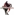
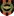
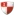
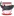
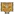
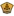
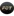
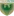
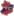
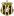

You are viewing !
🏆 EURO 2024
| Date | Fixture  Bold-faced team is selected by AIGoalie to win. Bold-faced team is selected by AIGoalie to win. |
Odds Pre-match odds of the selected team winning. Note that odds are fetched once per day at 00:00 GMT, meaning some matches may have live odds. Also odds may not be available for all leagues. |
Win How confident AIGoalie is that the selected team will win. Low confidence indicates unpredictability of the match. ▼ |
Result Whether the selected team won, drew, or lost. |
Over The minimum number of goals predicted by AIGoalie. ⚽ = over 0.5 ⚽⚽ = over 1.5 ⚽⚽⚽ = over 2.5 ... ► |
Alerts Home 🏥 = Considerable injuries 🏥🏥 = Major injuries 📉 = Dip in form Note, you may see injuries when expanding match but no alert here, meaning the model does not consider them important. |
Alerts Away 🏥 = Considerable injuries 🏥🏥 = Major injuries 📉 = Dip in form Note, you may see injuries when expanding match but no alert here, meaning the model does not consider them important. |
|
|---|---|---|---|---|---|---|---|---|
| Sat. 06 Jul. | England  17:00  Switzerland Form: LWDD Form: DWDD |
1.47 vs -1.47 | 2.32 | 75% | None | 😴 0.5 |
📉 Home team has a dip in form recently | 📉 Away team has a dip in form recently |
| Sat. 06 Jul. | Netherlands  20:00  Türkiye Form: WDLW Form: WLWW |
0.82 vs -0.96 | 1.65 | 63% | None | ⚽⚽ 2.09 |
📉 Home team has a dip in form recently | 📉 Away team has a dip in form recently |
| Fri. 05 Jul. | Spain  17:00  Germany Form: WWWW Form: WWWD |
0.44 vs -0.44 | 2.84 | 45% | None | ⚽⚽ 2.22 |
||
| Fri. 05 Jul. | Portugal  20:00 France Form: WWWL Form: DWDD |
-0.11 vs 0.08 | 2.5 | 16% | None | ⚽ 1.98 |
📉 Home team has a dip in form recently | 📉 Away team has a dip in form recently |
🏆 Copa América 2024
| Date | Fixture Bold-faced team is selected by AIGoalie to win. |
Odds Pre-match odds of the selected team winning. Note that odds are fetched once per day at 00:00 GMT, meaning some matches may have live odds. Also odds may not be available for all leagues. |
Win How confident AIGoalie is that the selected team will win. Low confidence indicates unpredictability of the match. ▼ |
Result Whether the selected team won, drew, or lost. |
Over The minimum number of goals predicted by AIGoalie. ⚽ = over 0.5 ⚽⚽ = over 1.5 ⚽⚽⚽ = over 2.5 ... ► |
Alerts Home 🏥 = Considerable injuries 🏥🏥 = Major injuries 📉 = Dip in form Note, you may see injuries when expanding match but no alert here, meaning the model does not consider them important. |
Alerts Away 🏥 = Considerable injuries 🏥🏥 = Major injuries 📉 = Dip in form Note, you may see injuries when expanding match but no alert here, meaning the model does not consider them important. |
|
|---|---|---|---|---|---|---|---|---|
| Fri. 05 Jul. | Argentina  02:00  Ecuador Form: WWWW Form: WWLW |
0.82 vs -1.78 | 1.48 | 63% | None | 😴 0.22 |
📉 Away team has a dip in form recently | |
| Sat. 06 Jul. | Venezuela  02:00  Canada Form: LDWL Form: LDLW |
-0.3 vs -0.67 | 2.68 | 4% | None | 😴 0.88 |
🏥 📉 Home team has considerable injuries and a dip in form recently | 📉 Away team has a dip in form recently |
🌍 Global
| Date | Fixture Bold-faced team is selected by AIGoalie to win. |
Odds Pre-match odds of the selected team winning. Note that odds are fetched once per day at 00:00 GMT, meaning some matches may have live odds. |
Win How confident AIGoalie is that the selected team will win. Low confidence indicates unpredictability of the match. ▼ |
Result Whether the selected team won, drew, or lost. |
Over The minimum number of goals predicted by AIGoalie. ⚽ = over 0.5 ⚽⚽ = over 1.5 ⚽⚽⚽ = over 2.5 ... ► |
Alerts Home 🏥 = Considerable injuries 🏥🏥 = Major injuries 📉 = Dip in form Note, you may see injuries when expanding match but no alert here, meaning the model does not consider them important. |
Alerts Away 🏥 = Considerable injuries 🏥🏥 = Major injuries 📉 = Dip in form Note, you may see injuries when expanding match but no alert here, meaning the model does not consider them important. |
|
|---|---|---|---|---|---|---|---|---|
| Sat. 06 Jul. | Aral Nukus  16:30  Pakhtakor Tashkent Form: WDWL Form: WDLW |
-4.7 vs 4.2 | 99% | None | ⚽⚽ 2.25 |
📉 Home team has a dip in form recently | 📉 Away team has a dip in form recently | |
| Fri. 05 Jul. | FC RFS  18:00 FS Jelgava Form: WDWW Form: DLLD |
1.72 vs -2.46 | 1.04 | 77% | None | ⚽⚽ 2.76 |
📉 Away team has a dip in form recently | |
| Sat. 06 Jul. | Cibao FC  Unknown  Atlético Vega Real Form: DWWD Form: LDDW |
1.61 vs -2.36 | 76% | None | 😴 0.96 |
📉 Away team has a dip in form recently | ||
| Sat. 06 Jul. | Santiago Wanderers  22:30  CD Palestino Form: DWWW Form: WDWL |
-2.08 vs 1.48 | 75% | None | ⚽ 1.48 |
📉 Away team has a dip in form recently | ||
| Sat. 06 Jul. | England 17:00 Switzerland Form: LWDD Form: DWDD |
1.47 vs -1.47 | 2.32 | 75% | None | 😴 0.5 |
📉 Home team has a dip in form recently | 📉 Away team has a dip in form recently |
| Sat. 06 Jul. | CA Peñarol  19:30  Club Deportivo Maldonado Form: WWLD Form: LDLD |
1.41 vs -2.35 | 74% | None | ⚽ 1.5 |
🏥 📉 Home team has considerable injuries and a dip in form recently | 📉 Away team has a dip in form recently | |
| Sat. 06 Jul. | Valur Reykjavík  18:00  Fylkir Reykjavík Form: LLDW Form: WWWL |
1.33 vs -1.97 | 73% | None | ⚽⚽⚽ 3.99 |
📉 Home team has a dip in form recently | 📉 Away team has a dip in form recently | |
| Fri. 05 Jul. | Navbahor Namangan  16:30  FC Buxoro Form: DDDL Form: WDLW |
1.18 vs -1.92 | 72% | None | ⚽ 1.21 |
📉 Home team has a dip in form recently | 📉 Away team has a dip in form recently | |
| Sat. 06 Jul. | Yunnan Yukun  12:30  Foshan Nanshi Form: DWWL Form: LDWL |
1.14 vs -1.8 | 71% | None | ⚽ 1.93 |
📉 Home team has a dip in form recently | 📉 Away team has a dip in form recently | |
| Sat. 06 Jul. | CA River Plate Montevideo  Unknown CA Peñarol Form: LDLD Form: WWLD |
-1.47 vs 0.83 | 63% | None | ⚽ 1.32 |
📉 Home team has a dip in form recently | 🏥 📉 Away team has considerable injuries and a dip in form recently | |
| Sat. 06 Jul. | Netherlands 20:00 Türkiye Form: WDLW Form: WLWW |
0.82 vs -0.96 | 1.65 | 63% | None | ⚽⚽ 2.09 |
📉 Home team has a dip in form recently | 📉 Away team has a dip in form recently |
| Fri. 05 Jul. | Argentina 02:00 Ecuador Form: WWWW Form: WWLW |
0.82 vs -1.78 | 1.48 | 63% | None | 😴 0.22 |
📉 Away team has a dip in form recently | |
| Fri. 05 Jul. | Henan FC  12:35 Shanghai Port Form: DWWW Form: WWWW |
-1.28 vs 0.81 | 1.32 | 62% | None | ⚽⚽⚽ 3.4 |
||
| Fri. 05 Jul. | FA Siauliai  17:00  FK TransINVEST Form: DDDD Form: LWWL |
0.78 vs -1.63 | 1.04 | 61% | None | ⚽⚽ 2.37 |
🏥 📉 Home team has considerable injuries and a dip in form recently | 📉 Away team has a dip in form recently |
| Sat. 06 Jul. | Urawa Red Diamonds  10:30  Shonan Bellmare Form: DLDW Form: WDLD |
0.74 vs -1.78 | 60% | None | ⚽ 1.77 |
🏥 📉 Home team has considerable injuries and a dip in form recently | 🏥 📉 Away team has considerable injuries and a dip in form recently | |
| Sat. 06 Jul. | ÍA Akranes  15:00  HK Kópavogs Form: DWLL Form: LWLL |
0.73 vs -1.58 | 59% | None | ⚽⚽ 2.6 |
📉 Home team has a dip in form recently | 📉 Away team has a dip in form recently | |
| Fri. 05 Jul. | Skanstes SK  17:00  Valmiera FC II Form: LLLW Form: WWLW |
-1.38 vs 0.72 | 59% | None | ⚽ 1.61 |
📉 Home team has a dip in form recently | 📉 Away team has a dip in form recently | |
| Sat. 06 Jul. | Jiangxi Lushan  12:30  Guangxi Pingguo Haliao Form: LDLL Form: WDWW |
-1.36 vs 0.69 | 58% | None | ⚽⚽ 2.01 |
📉 Home team has a dip in form recently | ||
| Sat. 06 Jul. | V-Varen Nagasaki  11:00  Roasso Kumamoto Form: WDWW Form: DLLL |
0.68 vs -1.39 | 1.66 | 57% | None | ⚽⚽ 2.58 |
📉 Away team has a dip in form recently | |
| Sat. 06 Jul. | Kashima Antlers  10:00  Hokkaido Consadole Sapporo Form: WDDD Form: WLLL |
0.68 vs -1.85 | 57% | None | ⚽⚽ 2.58 |
📉 Home team has a dip in form recently | 🏥🏥 📉 Away team has MAJOR injuries and a dip in form recently | |
| Sat. 06 Jul. | SJK Seinäjoki II  14:00  JIPPO Joensuu Form: DDWL Form: DLLD |
0.66 vs -1.23 | 56% | None | ⚽⚽ 2.28 |
📉 Home team has a dip in form recently | 📉 Away team has a dip in form recently | |
| Sat. 06 Jul. | Yokohama FC  10:00  Blaublitz Akita Form: WWWW Form: DLLW |
0.64 vs -1.25 | 1.76 | 55% | None | ⚽ 1.09 |
📉 Away team has a dip in form recently | |
| Sat. 06 Jul. | Labasa FC  02:30  Nadroga FC Form: WWWD Form: WLWL |
0.57 vs -1.45 | 53% | None | ⚽ 1.58 |
📉 Away team has a dip in form recently | ||
| Fri. 05 Jul. | KÍ Klaksvík 18:30 B36 Tórshavn Form: WWLW Form: WDDD |
0.54 vs -1.22 | 51% | None | ⚽ 1.75 |
📉 Home team has a dip in form recently | 📉 Away team has a dip in form recently | |
| Sat. 06 Jul. | IF Elfsborg  14:00  IF Brommapojkarna Form: WLWL Form: DLWD |
0.52 vs -1.23 | 1.82 | 51% | None | ⚽⚽ 2.61 |
📉 Home team has a dip in form recently | 📉 Away team has a dip in form recently |
| Fri. 05 Jul. | Larne FC  19:45  Cliftonville FC Form: WWDW Form: LWDW |
0.5 vs -1.12 | 50% | None | ⚽ 1.78 |
|||
| Fri. 05 Jul. | Spain 17:00 Germany Form: WWWW Form: WWWD |
0.44 vs -0.44 | 2.84 | 45% | None | ⚽⚽ 2.22 |
||
| Sat. 06 Jul. | Pallokerho-35  14:00  Mikkelin Palloilijat Form: WWDL Form: LLLD |
0.44 vs -1.14 | 45% | None | ⚽⚽ 2.18 |
📉 Home team has a dip in form recently | 📉 Away team has a dip in form recently | |
| Fri. 05 Jul. | Club Oriental  20:00  Montevideo City Torque Form: LWDL Form: DDLW |
-1.14 vs 0.43 | 45% | None | ⚽⚽ 2.36 |
📉 Home team has a dip in form recently | 🏥 📉 Away team has considerable injuries and a dip in form recently | |
| Sat. 06 Jul. | Vaasan Palloseura  15:00  Ekenäs IF Form: DWDL Form: WLWW |
0.43 vs -0.85 | 45% | None | ⚽⚽ 2.41 |
📉 Home team has a dip in form recently | 📉 Away team has a dip in form recently | |
| Fri. 05 Jul. | Torpedo-BelAZ Zhodino  19:00  Slavia Mozyr Form: WWWW Form: DDDW |
0.43 vs -1.15 | 44% | None | 😴 0.79 |
📉 Away team has a dip in form recently | ||
| Fri. 05 Jul. | CA Rentistas  18:30  La Luz FC Form: LDDW Form: WLWW |
0.41 vs -1.07 | 43% | None | ⚽ 1.17 |
📉 Home team has a dip in form recently | 📉 Away team has a dip in form recently | |
| Fri. 05 Jul. | CA Defensores de Belgrano  23:00  CD Morón Form: DLLW Form: LWLL |
0.39 vs -1.14 | 1.96 | 41% | None | ⚽ 1.67 |
📉 Home team has a dip in form recently | 📉 Away team has a dip in form recently |
| Fri. 05 Jul. | KÍ Klaksvík II 0:0 FC Hoyvík Form: DWLW Form: LLLL |
0.38 vs -1.18 | 40% | 0.5 | ⚽⚽ 2.93 |
📉 Home team has a dip in form recently | 📉 Away team has a dip in form recently | |
| Sat. 06 Jul. | Ilves Tampere  13:00  HJK Helsinki Form: DWLD Form: WWWL |
-1.02 vs 0.38 | 2.92 | 40% | None | ⚽⚽ 2.15 |
📉 Home team has a dip in form recently | 📉 Away team has a dip in form recently |
| Sat. 06 Jul. | Tianjin Jinmen Tiger  12:00 Changchun Yatai Form: LLWD Form: DLWD |
0.38 vs -1.15 | 2.1 | 40% | None | ⚽ 1.98 |
📉 Home team has a dip in form recently | 📉 Away team has a dip in form recently |
| Fri. 05 Jul. | Sport Club Corinthians Paulista  00:00  Esporte Clube Vitória Form: DLDD Form: WWLW |
0.37 vs -1.37 | 40% | None | ⚽ 1.63 |
🏥 📉 Home team has considerable injuries and a dip in form recently | 📉 Away team has a dip in form recently | |
| Sat. 06 Jul. | FK RFS II 15:00  Rezeknes FA Form: WWWW Form: LLLL |
0.36 vs -1.29 | 38% | None | ⚽⚽⚽ 3.91 |
📉 Away team has a dip in form recently | ||
| Sat. 06 Jul. | North Carolina FC  00:30  Miami FC Form: WLWD Form: LLLD |
0.34 vs -1.01 | 1.04 | 37% | None | ⚽⚽ 2.06 |
📉 Home team has a dip in form recently | 📉 Away team has a dip in form recently |
| Sat. 06 Jul. | América Futebol Clube (MG)  15:00  Operário Ferroviário Esporte Clube (PR) Form: WLDL Form: WWWL |
0.34 vs -0.97 | 37% | None | ⚽ 1.24 |
📉 Home team has a dip in form recently | 📉 Away team has a dip in form recently | |
| Sat. 06 Jul. | Rampla Juniors FC  Unknown  Liverpool FC Montevideo Form: WLDL Form: LLLL |
-0.86 vs 0.33 | 2.42 | 36% | None | ⚽⚽ 2.23 |
📉 Home team has a dip in form recently | 📉 Away team has a dip in form recently |
| Fri. 05 Jul. | Colorado Springs Switchbacks FC  02:00  FC Tulsa Form: WDWD Form: LLWW |
0.32 vs -0.97 | 36% | None | ⚽ 1.84 |
📉 Home team has a dip in form recently | 📉 Away team has a dip in form recently | |
| Sat. 06 Jul. | Busan IPark  11:30  Bucheon FC 1995 Form: LDDL Form: DLLW |
0.32 vs -1.01 | 1.86 | 36% | None | ⚽ 1.26 |
📉 Home team has a dip in form recently | 📉 Away team has a dip in form recently |
| Sat. 06 Jul. | Goiás EC  21:00  Associação Chapecoense de Futebol Form: DLLW Form: WLLL |
0.32 vs -1.07 | 35% | None | 😴 0.97 |
📉 Home team has a dip in form recently | 📉 Away team has a dip in form recently | |
| Sat. 06 Jul. | Gimpo FC  11:00  Chungnam Asan Form: WWWD Form: WDWW |
0.29 vs -1.03 | 2.54 | 33% | None | ⚽ 1.05 |
||
| Sat. 06 Jul. | Shijiazhuang Gongfu  12:30  Wuxi Wugo Form: LLDL Form: LLLW |
0.28 vs -1.06 | 33% | None | ⚽ 1.69 |
📉 Home team has a dip in form recently | 📉 Away team has a dip in form recently | |
| Sat. 06 Jul. | Machida Zelvia  10:00  Nagoya Grampus Form: LWDD Form: LDLL |
0.28 vs -1.31 | 1.88 | 33% | None | ⚽ 1.6 |
🏥 📉 Home team has considerable injuries and a dip in form recently | 🏥 📉 Away team has considerable injuries and a dip in form recently |
| Sat. 06 Jul. | CA Boston River  16:30  CA Cerro Form: WLDL Form: WWWL |
0.28 vs -1.13 | 32% | None | ⚽ 1.56 |
📉 Home team has a dip in form recently | 📉 Away team has a dip in form recently | |
| Sat. 06 Jul. | Dynamic Herb Cebu FC  10:30  Stallion Laguna FC Form: WWWW Form: DLWL |
0.25 vs -1.13 | 30% | None | ⚽⚽⚽⚽ 4.99 |
📉 Away team has a dip in form recently | ||
| Fri. 05 Jul. | Incheon United  11:30  Gimcheon Sangmu Form: DWLL Form: LLWW |
-1.1 vs 0.25 | 2.58 | 30% | None | ⚽⚽ 2.09 |
📉 Home team has a dip in form recently | 📉 Away team has a dip in form recently |
| Fri. 05 Jul. | FK Turan  16:00  FK Atyrau Form: LLDD Form: WWWD |
0.25 vs -1.17 | 3.05 | 30% | None | 😴 0.99 |
📉 Home team has a dip in form recently | |
| Sat. 06 Jul. | Cerro Largo FC  14:00 Liverpool FC Montevideo Form: LWDW Form: LLLL |
-0.94 vs 0.24 | 2.42 | 29% | None | ⚽ 1.35 |
🏥 Home team has considerable injuries | 📉 Away team has a dip in form recently |
| Sat. 06 Jul. | Nanjing City  12:30  Shanghai Jiading Huilong Form: WDWW Form: LWLD |
0.21 vs -1.06 | 27% | None | 😴 0.29 |
📉 Away team has a dip in form recently | ||
| Sat. 06 Jul. | Danubio FC  Unknown  Club Nacional Form: DDDW Form: LWLW |
-0.86 vs 0.21 | 27% | None | ⚽ 1.4 |
📉 Home team has a dip in form recently | 📉 Away team has a dip in form recently | |
| Sat. 06 Jul. | St. George City FA  10:15  Sydney FC II Form: DWLW Form: WWLW |
0.2 vs -1.04 | 26% | None | ⚽⚽ 2.55 |
📉 Home team has a dip in form recently | 📉 Away team has a dip in form recently | |
| Sat. 06 Jul. | FK Banga Gargzdai  17:00  FC Dziugas Telsiai Form: LWDL Form: DWWL |
0.19 vs -0.98 | 1.04 | 25% | None | ⚽ 1.05 |
📉 Home team has a dip in form recently | 📉 Away team has a dip in form recently |
| Sat. 06 Jul. | York United FC  21:00  HFX Wanderers FC Form: LDWW Form: LDDD |
0.19 vs -1.01 | 1.04 | 25% | None | ⚽⚽ 2.1 |
📉 Away team has a dip in form recently | |
| Sat. 06 Jul. | Don Bosco Garelli United  10:45  Manila Digger FC Form: WLLL Form: WLLL |
0.19 vs -0.94 | 25% | None | ⚽⚽⚽ 3.45 |
📉 Home team has a dip in form recently | 📉 Away team has a dip in form recently | |
| Sat. 06 Jul. | Fagiano Okayama  11:00  Vegalta Sendai Form: DLWW Form: DLDD |
0.17 vs -0.96 | 2.28 | 24% | None | ⚽ 1.87 |
📉 Home team has a dip in form recently | 📉 Away team has a dip in form recently |
| Sat. 06 Jul. | Thróttur Reykjavík  17:00  Dalvík/Reynir Form: DDWL Form: LLWL |
-0.75 vs 0.15 | 22% | None | ⚽⚽ 2.64 |
📉 Home team has a dip in form recently | 📉 Away team has a dip in form recently | |
| Sat. 06 Jul. | Shimizu S-Pulse  10:30  JEF United Chiba Form: WWLL Form: WWWL |
0.15 vs -0.96 | 2.18 | 22% | None | ⚽⚽ 2.2 |
🏥 📉 Home team has considerable injuries and a dip in form recently | 📉 Away team has a dip in form recently |
| Fri. 05 Jul. | FK Lida  16:00  ABFF U17 Form: WWWL Form: LLWL |
0.14 vs -1.25 | 22% | None | ⚽⚽ 2.04 |
📉 Home team has a dip in form recently | 📉 Away team has a dip in form recently | |
| Fri. 05 Jul. | Manly United FC  10:30 Hills United Form: DWDW Form: LLWL |
0.14 vs -1.03 | 21% | None | ⚽ 1.71 |
📉 Away team has a dip in form recently | ||
| Sat. 06 Jul. | Renofa Yamaguchi  11:00  Kagoshima United Form: LWWL Form: DLWW |
0.14 vs -1.0 | 2.1 | 21% | None | ⚽ 1.54 |
📉 Home team has a dip in form recently | 📉 Away team has a dip in form recently |
| Fri. 05 Jul. | FK Jetisay  13:00  SD Family Astana Form: LWWW Form: LDWL |
0.14 vs -0.89 | 21% | None | ⚽⚽ 2.24 |
📉 Away team has a dip in form recently | ||
| Sat. 06 Jul. | Montevideo Wanderers  Unknown  CA Progreso Form: LWWL Form: LLWD |
0.14 vs -0.93 | 21% | None | ⚽⚽ 2.41 |
📉 Home team has a dip in form recently | 🏥 📉 Away team has considerable injuries and a dip in form recently | |
| Sat. 06 Jul. | Coquimbo Unido  20:00  CD Cobresal Form: WDWD Form: LLLD |
0.13 vs -0.9 | 20% | None | ⚽⚽ 2.03 |
📉 Home team has a dip in form recently | 📉 Away team has a dip in form recently | |
| Sat. 06 Jul. | AMSD Atlético de Rafaela  01:00  Club de Gimnasia y Tiro Form: LLLL Form: WDDW |
0.12 vs -1.25 | 2.34 | 20% | None | 😴 0.37 |
📉 Home team has a dip in form recently | 📉 Away team has a dip in form recently |
| Fri. 05 Jul. | Club Plaza Colonia  18:00  Albion FC Form: WLLW Form: LDWL |
0.11 vs -1.0 | 19% | None | ⚽ 1.0 |
📉 Home team has a dip in form recently | 📉 Away team has a dip in form recently | |
| Sat. 06 Jul. | AFA Olaine  11:00  Riga FC II Form: WDLD Form: WLWD |
-0.53 vs 0.11 | 19% | None | ⚽⚽⚽⚽ 4.4 |
📉 Home team has a dip in form recently | 📉 Away team has a dip in form recently | |
| Fri. 05 Jul. | FK Ekibastuz  15:00  FC Arys Form: WLLW Form: LLLL |
0.1 vs -0.82 | 18% | None | ⚽ 1.76 |
📉 Home team has a dip in form recently | 📉 Away team has a dip in form recently | |
| Sat. 06 Jul. | CA Boston River Unknown  Miramar Misiones Form: WLDL Form: WLWW |
0.1 vs -0.66 | 18% | None | ⚽ 1.38 |
📉 Home team has a dip in form recently | 📉 Away team has a dip in form recently | |
| Sat. 06 Jul. | Käpylän Pallo  14:00  Turun Palloseura Form: LDLL Form: WWDL |
-0.65 vs 0.1 | 18% | None | ⚽⚽ 2.86 |
📉 Home team has a dip in form recently | 📉 Away team has a dip in form recently | |
| Sat. 06 Jul. | Tartu JK Welco  13:00  FC Flora Tallinn U21 Form: DWDD Form: WDLL |
0.09 vs -0.59 | 17% | None | ⚽⚽ 2.84 |
📉 Home team has a dip in form recently | 📉 Away team has a dip in form recently | |
| Fri. 05 Jul. | Portugal 20:00 France Form: WWWL Form: DWDD |
-0.11 vs 0.08 | 2.5 | 16% | None | ⚽ 1.98 |
📉 Home team has a dip in form recently | 📉 Away team has a dip in form recently |
| Sat. 06 Jul. | Mārupes SC  17:00 Ogre United Form: WLWW Form: WLWD |
0.07 vs -1.07 | 16% | None | 😴 0.76 |
📉 Home team has a dip in form recently | 📉 Away team has a dip in form recently | |
| Sat. 06 Jul. | Ventforet Kofu  10:00  Tokushima Vortis Form: DWDL Form: LWLW |
0.06 vs -0.79 | 15% | None | ⚽ 1.95 |
📉 Home team has a dip in form recently | 📉 Away team has a dip in form recently | |
| Sat. 06 Jul. | Western Springs AFC  06:30  Birkenhead United Form: DLWL Form: WWDW |
0.06 vs -0.39 | 15% | None | ⚽⚽ 2.97 |
📉 Home team has a dip in form recently | ||
| Sat. 06 Jul. | Dinamo 2 Minsk  16:00  Bumprom Gomel Form: WLLW Form: WDWL |
0.06 vs -0.7 | 15% | None | ⚽ 1.16 |
📉 Home team has a dip in form recently | 📉 Away team has a dip in form recently | |
| Sat. 06 Jul. | Albirex Niigata  10:30  Sagan Tosu Form: WDDD Form: LWLL |
0.05 vs -1.12 | 1.83 | 14% | None | ⚽⚽ 2.39 |
📉 Home team has a dip in form recently | 📉 Away team has a dip in form recently |
| Sat. 06 Jul. | FK Auda  16:00  Valmiera FC Form: WLLL Form: WWLD |
0.05 vs -0.57 | 14% | None | ⚽ 1.75 |
📉 Home team has a dip in form recently | 📉 Away team has a dip in form recently | |
| Fri. 05 Jul. | Ceará Sporting Club  23:00  Santos FC Form: LLDL Form: LWDW |
-0.95 vs 0.04 | 3.05 | 13% | None | ⚽⚽ 2.03 |
📉 Home team has a dip in form recently | 🏥 Away team has considerable injuries |
| Fri. 05 Jul. | Los Angeles Galaxy  03:30  Los Angeles FC Form: LWWW Form: WWDW |
0.03 vs -0.75 | 3.05 | 13% | None | ⚽⚽ 2.58 |
||
| Sat. 06 Jul. | Detroit City FC  00:00  Tampa Bay Rowdies Form: LWWL Form: WLWW |
-0.65 vs 0.02 | 1.06 | 12% | None | ⚽⚽ 2.37 |
📉 Home team has a dip in form recently | 📉 Away team has a dip in form recently |
| Fri. 05 Jul. | Järvenpään Palloseura  17:00  FC KTP Form: DDLW Form: DWLW |
-0.55 vs 0.02 | 12% | None | ⚽⚽⚽ 3.59 |
📉 Home team has a dip in form recently | 📉 Away team has a dip in form recently | |
| Sat. 06 Jul. | Young Lions 11:00 BG Tampines Rovers Form: LLWW Form: DWWW |
-0.71 vs 0.02 | 12% | None | ⚽⚽⚽ 3.61 |
📉 Home team has a dip in form recently | ||
| Sat. 06 Jul. | Tuloy FC 08:00  Loyola FC Form: LLWW Form: LDWL |
0.02 vs -0.77 | 11% | None | ⚽⚽⚽⚽ 4.13 |
📉 Home team has a dip in form recently | 📉 Away team has a dip in form recently | |
| Sat. 06 Jul. | FCI Levadia U21  13:00  JK Tabasalu Form: DWLW Form: LLWL |
0.01 vs -0.68 | 11% | None | ⚽⚽ 2.76 |
📉 Home team has a dip in form recently | 📉 Away team has a dip in form recently | |
| Fri. 05 Jul. | FK Kauno Zalgiris  16:30  FK Zalgiris Vilnius Form: DDWW Form: WWWW |
0.01 vs -0.44 | 1.04 | 11% | None | ⚽⚽ 2.23 |
||
| Sat. 06 Jul. | CA Fénix  Unknown  Defensor Sporting Club Form: WLLW Form: WWWD |
-0.66 vs 0.01 | 10% | None | ⚽ 1.2 |
📉 Home team has a dip in form recently | ||
| Sat. 06 Jul. | Kashiwa Reysol  11:00  FC Tokyo Form: WLLD Form: WDWW |
0.0 vs -0.62 | 2.02 | 10% | None | ⚽⚽ 2.13 |
📉 Home team has a dip in form recently | |
| Fri. 05 Jul. | Forge FC  00:00  Vancouver FC Form: LWLD Form: LDDL |
-0.0 vs -0.77 | 1.43 | 10% | None | ⚽ 1.9 |
📉 Home team has a dip in form recently | 📉 Away team has a dip in form recently |
| Sat. 06 Jul. | CA Atlanta  19:00 AA Estudiantes (Río Cuarto) Form: WLDL Form: DLLW |
-0.01 vs -0.54 | 1.25 | 10% | None | 😴 0.81 |
📉 Home team has a dip in form recently | 📉 Away team has a dip in form recently |
| Sat. 06 Jul. | FC Juárez  04:00 Atlas Guadalajara Form: WLWD Form: LWDL |
-0.01 vs -0.95 | 2.24 | 10% | None | ⚽⚽ 2.03 |
📉 Home team has a dip in form recently | 📉 Away team has a dip in form recently |
| Sat. 06 Jul. | FK Gomel  19:00  Arsenal Dzerzhinsk Form: WDLL Form: WLWW |
-0.31 vs -0.02 | 10% | None | ⚽⚽ 2.31 |
📉 Home team has a dip in form recently | 📉 Away team has a dip in form recently | |
| Sat. 06 Jul. | FK Smorgon  15:00 BATE Borisov Form: DDLW Form: LWLW |
-0.72 vs -0.03 | 9% | None | ⚽⚽⚽ 3.49 |
📉 Home team has a dip in form recently | 📉 Away team has a dip in form recently | |
| Sat. 06 Jul. | Pittsburgh Riverhounds SC 00:00  Monterey Bay FC Form: LDLL Form: LDWW |
-0.04 vs -0.72 | 1.05 | 9% | None | 😴 0.89 |
📉 Home team has a dip in form recently | |
| Sat. 06 Jul. | Uruguay Montevideo FC  18:00 CA Atenas de San Carlos Form: WWWW Form: WLWL |
-0.05 vs -0.73 | 9% | None | 😴 0.84 |
📉 Away team has a dip in form recently | ||
| Sat. 06 Jul. | Brusque Futebol Clube (SC)  01:00  Associação Atlética Ponte Preta Form: WDDD Form: LWLW |
-0.05 vs -0.81 | 9% | None | ⚽ 1.36 |
📉 Home team has a dip in form recently | 📉 Away team has a dip in form recently | |
| Sat. 06 Jul. | ÍBV Vestmannaeyjar 16:15  Leiknir Reykjavík Form: DWWW Form: LLLW |
-0.07 vs -0.4 | 9% | None | ⚽⚽ 2.87 |
📉 Away team has a dip in form recently | ||
| Sat. 06 Jul. | NWS Spirit  08:30  Rockdale Ilinden FC Form: LWLW Form: WWWW |
-0.29 vs -0.07 | 9% | None | ⚽⚽ 2.22 |
📉 Home team has a dip in form recently | ||
| Sat. 06 Jul. | Sogdiana Jizzakh  16:30  Neftchi Fergana Form: WLWW Form: WDLD |
-0.5 vs -0.07 | 9% | None | ⚽ 1.21 |
📉 Home team has a dip in form recently | 📉 Away team has a dip in form recently | |
| Sat. 06 Jul. | Jeju United  11:00  FC Seoul Form: LWLW Form: DWWW |
-0.88 vs -0.07 | 9% | None | ⚽⚽ 2.35 |
🏥 📉 Home team has considerable injuries and a dip in form recently | ||
| Sat. 06 Jul. | CA Brown (Adrogué)  19:00  CA Talleres (Remedios de Escalada) Form: LDLD Form: LLWD |
-0.07 vs -0.54 | 2.42 | 9% | None | 😴 0.73 |
📉 Home team has a dip in form recently | 📉 Away team has a dip in form recently |
| Sat. 06 Jul. | CSD Madryn  19:00  CA Mitre Form: WWDW Form: WDWD |
-0.08 vs -0.69 | 2.06 | 8% | None | 😴 0.17 |
📉 Away team has a dip in form recently | |
| Sat. 06 Jul. | Delfines del Este FC  Unknown  Universidad O&M FC Form: DLWD Form: DDWW |
-0.08 vs -0.37 | 8% | None | ⚽ 1.22 |
📉 Home team has a dip in form recently | ||
| Fri. 05 Jul. | Rhode Island FC  00:30 Indy Eleven Form: DLDW Form: WWWW |
-0.1 vs -0.38 | 1.75 | 8% | None | ⚽⚽ 2.56 |
📉 Home team has a dip in form recently | |
| Sat. 06 Jul. | Ordabasy Shymkent  16:00 Yelimay Semey Form: DWWW Form: DDWD |
-0.11 vs -0.39 | 8% | None | ⚽ 1.87 |
📉 Away team has a dip in form recently | ||
| Sat. 06 Jul. | JFK Ventspils  13:00  JDFS Alberts Riga Form: LWLD Form: WWWL |
-0.12 vs -0.26 | 8% | None | ⚽ 1.21 |
📉 Home team has a dip in form recently | 📉 Away team has a dip in form recently | |
| Sat. 06 Jul. | Vestri Ísafjördur  15:00  Breidablik Kópavogur Form: WDLW Form: LDLL |
-0.64 vs -0.12 | 8% | None | ⚽⚽ 2.26 |
📉 Home team has a dip in form recently | 📉 Away team has a dip in form recently | |
| Sat. 06 Jul. | KR Reykjavík  15:00  Stjarnan Gardabaer Form: WLDW Form: WWLW |
-0.13 vs -0.54 | 7% | None | ⚽⚽ 2.59 |
📉 Home team has a dip in form recently | 📉 Away team has a dip in form recently | |
| Fri. 05 Jul. | NSÍ Runavík 17:00 07 Vestur Form: WDLL Form: WLDL |
-0.13 vs -0.56 | 1.01 | 7% | None | ⚽⚽ 2.97 |
📉 Home team has a dip in form recently | 📉 Away team has a dip in form recently |
| Fri. 05 Jul. | Sanfrecce Hiroshima  11:00  Vissel Kobe Form: WLWD Form: WWLD |
-0.13 vs -0.35 | 2.44 | 7% | None | ⚽ 1.7 |
📉 Home team has a dip in form recently | 📉 Away team has a dip in form recently |
| Sat. 06 Jul. | Tobol Kostanay  14:00  FK Aktobe Form: LWLD Form: WDLW |
-0.13 vs -0.45 | 7% | None | ⚽ 1.52 |
📉 Home team has a dip in form recently | 📉 Away team has a dip in form recently | |
| Fri. 05 Jul. | Colorado Rapids  02:30  Sporting Kansas City Form: LWWW Form: WLLL |
-0.13 vs -0.7 | 7% | None | ⚽⚽ 2.6 |
📉 Away team has a dip in form recently | ||
| Sat. 06 Jul. | Salon Palloilijat  14:00  FF Jaro Form: DDDL Form: DLDW |
-0.14 vs -0.34 | 7% | None | ⚽ 1.93 |
📉 Home team has a dip in form recently | 📉 Away team has a dip in form recently | |
| Sat. 06 Jul. | CSD Cooper  13:00  IA Sud América Form: WLDL Form: WWDL |
-0.14 vs -0.89 | 7% | None | 😴 0.96 |
📉 Home team has a dip in form recently | 📉 Away team has a dip in form recently | |
| Sat. 06 Jul. | CSD Cooper 13:00 IA Sud América Form: WLDL Form: WWDL |
-0.14 vs -0.89 | 7% | None | 😴 0.96 |
📉 Home team has a dip in form recently | 📉 Away team has a dip in form recently | |
| Fri. 05 Jul. | FC Dallas  01:30  Portland Timbers Form: DWWL Form: DDWW |
-0.15 vs -0.87 | 2.38 | 7% | None | ⚽⚽ 2.22 |
🏥 📉 Home team has considerable injuries and a dip in form recently | |
| Sat. 06 Jul. | Atlántico FC  Unknown  Moca FC Form: LLWW Form: DWWW |
-0.15 vs -0.55 | 7% | None | ⚽ 1.16 |
📉 Home team has a dip in form recently | ||
| Sat. 06 Jul. | FC Tallinn  14:00  Viimsi JK Form: WWWD Form: WWDW |
-0.16 vs -0.2 | 7% | None | ⚽⚽ 2.78 |
|||
| Sat. 06 Jul. | Mjällby AIF  14:00  IK Sirius Form: WLLW Form: WDDL |
-0.17 vs -0.45 | 2.18 | 7% | None | ⚽⚽ 2.02 |
📉 Home team has a dip in form recently | 📉 Away team has a dip in form recently |
| Fri. 05 Jul. | Shakhter 2 Soligorsk  15:00  Volna Pinsk Form: WWLL Form: DLWL |
-0.18 vs -0.47 | 6% | None | ⚽ 1.61 |
📉 Home team has a dip in form recently | 📉 Away team has a dip in form recently | |
| Sat. 06 Jul. | Energetik-BGU Minsk  14:00  FK Baranovichi Form: LLLL Form: LWLL |
-0.18 vs -0.71 | 6% | None | ⚽ 1.48 |
📉 Home team has a dip in form recently | 📉 Away team has a dip in form recently | |
| Sat. 06 Jul. | United City FC  13:30  One Taguig FC Form: DWDW Form: DWWW |
-0.25 vs -0.18 | 6% | None | ⚽ 1.62 |
|||
| Sat. 06 Jul. | FK Vitebsk  17:00  Isloch Minsk Region Form: WDLW Form: LWWL |
-0.19 vs -0.51 | 6% | None | ⚽ 1.04 |
📉 Home team has a dip in form recently | 📉 Away team has a dip in form recently | |
| Sat. 06 Jul. | FC Elva  10:30  Harju JK Laagri Form: LLDL Form: WDDW |
-0.2 vs -0.44 | 6% | None | ⚽⚽ 2.89 |
📉 Home team has a dip in form recently | 📉 Away team has a dip in form recently | |
| Sat. 06 Jul. | CA Cerro Unknown Cerro Largo FC Form: WWWL Form: LWDW |
-0.21 vs -0.78 | 6% | None | ⚽ 1.44 |
📉 Home team has a dip in form recently | 🏥 Away team has considerable injuries | |
| Fri. 05 Jul. | FK Tukums 2000 II  18:00  Leevon PPK Form: LLLL Form: LWLW |
-0.21 vs -0.29 | 6% | None | ⚽ 1.91 |
📉 Home team has a dip in form recently | 📉 Away team has a dip in form recently | |
| Sat. 06 Jul. | Daegu FC  11:30  Pohang Steelers Form: LWWL Form: DWWD |
-0.21 vs -0.46 | 6% | None | ⚽ 1.31 |
📉 Home team has a dip in form recently | ||
| Sat. 06 Jul. | Albirex Niigata (S) 11:00 Geylang International Form: WLLL Form: DWWD |
-0.22 vs -0.61 | 6% | None | ⚽⚽⚽ 3.82 |
🏥 📉 Home team has considerable injuries and a dip in form recently | ||
| Sat. 06 Jul. | St George Saints FC  10:00 Western Sydney Wanderers II Form: WDDL Form: LLDL |
-0.22 vs -0.28 | 6% | None | ⚽⚽⚽ 3.49 |
📉 Home team has a dip in form recently | 📉 Away team has a dip in form recently | |
| Fri. 05 Jul. | Suwon FC  11:30  Ulsan HD FC Form: WLLW Form: DWWW |
-0.59 vs -0.23 | 2.22 | 5% | None | ⚽⚽ 2.44 |
📉 Home team has a dip in form recently | 🏥 Away team has considerable injuries |
| Sat. 06 Jul. | Gamba Osaka  11:00  Yokohama F. Marinos Form: WWWD Form: WWLL |
-0.24 vs -0.54 | 2.46 | 5% | None | ⚽ 1.76 |
📉 Away team has a dip in form recently | |
| Sat. 06 Jul. | Fujieda MYFC  10:00  Mito HollyHock Form: LWLL Form: LWWL |
-0.24 vs -0.66 | 2.62 | 5% | None | ⚽ 1.27 |
📉 Home team has a dip in form recently | 📉 Away team has a dip in form recently |
| Fri. 05 Jul. | Charleston Battery  00:00  Birmingham Legion FC Form: LDDL Form: DWLW |
-0.26 vs -0.38 | 1.17 | 5% | None | ⚽ 1.76 |
📉 Home team has a dip in form recently | 📉 Away team has a dip in form recently |
| Sat. 06 Jul. | Tokyo Verdy  10:00  Cerezo Osaka Form: WLWL Form: WWDW |
-0.27 vs -0.5 | 3.0 | 5% | None | ⚽ 1.78 |
📉 Home team has a dip in form recently | |
| Sat. 06 Jul. | Iwaki FC  10:00  Oita Trinita Form: WDWL Form: DWLL |
-0.27 vs -0.6 | 1.85 | 5% | None | ⚽ 1.26 |
📉 Home team has a dip in form recently | 📉 Away team has a dip in form recently |
| Sat. 06 Jul. | Atlético San Cristóbal  Unknown  Atlético Pantoja Form: LLLW Form: LLWD |
-0.32 vs -0.28 | 4% | None | ⚽⚽ 2.76 |
📉 Home team has a dip in form recently | 📉 Away team has a dip in form recently | |
| Sat. 06 Jul. | Kaysar Kyzylorda  16:00  FC Zhenis Astana Form: LWDW Form: LWLD |
-0.28 vs -0.51 | 4% | None | ⚽ 1.32 |
📉 Away team has a dip in form recently | ||
| Fri. 05 Jul. | Balestier Khalsa 12:45 Brunei DPMM FC Form: DWLD Form: WLDL |
-0.29 vs -0.4 | 1.04 | 4% | None | ⚽⚽ 2.64 |
📉 Home team has a dip in form recently | 📉 Away team has a dip in form recently |
| Sat. 06 Jul. | Cangzhou Mighty Lions 13:00  Shenzhen Peng City Form: LLLL Form: LWWW |
-0.39 vs -0.3 | 1.99 | 4% | None | ⚽⚽ 2.15 |
📉 Home team has a dip in form recently | 🏥🏥 Away team has MAJOR injuries |
| Sat. 06 Jul. | Venezuela 02:00 Canada Form: LDWL Form: LDLW |
-0.3 vs -0.67 | 2.68 | 4% | None | 😴 0.88 |
🏥 📉 Home team has considerable injuries and a dip in form recently | 📉 Away team has a dip in form recently |
| Sat. 06 Jul. | Lokomotiv Gomel  13:00  Belshina Bobruisk Form: DLLW Form: WLDW |
-0.3 vs -0.39 | 4% | None | ⚽ 1.9 |
📉 Home team has a dip in form recently | 📉 Away team has a dip in form recently | |
| Sat. 06 Jul. | Shanghai Shenhua  12:35  Shandong Taishan Form: WDWW Form: WDWD |
-0.31 vs -0.35 | 1.74 | 4% | None | ⚽ 1.53 |
📉 Away team has a dip in form recently | |
| Sat. 06 Jul. | ÍF Fuglafjördur 17:00 EB/Streymur Form: DLLL Form: LLWW |
-0.31 vs -0.44 | 4% | None | ⚽⚽ 2.36 |
📉 Home team has a dip in form recently | 📉 Away team has a dip in form recently | |
| Sat. 06 Jul. | Club Almagro  19:05  CA Temperley Form: LDDD Form: WLLW |
-0.33 vs -0.32 | 2.38 | 4% | None | ⚽⚽ 2.06 |
📉 Home team has a dip in form recently | 📉 Away team has a dip in form recently |
| Sat. 06 Jul. | Club Deportivo Maldonado Unknown  Racing Club de Montevideo Form: LDLD Form: LDWD |
-0.37 vs -0.35 | 3% | None | ⚽ 1.51 |
📉 Home team has a dip in form recently | 📉 Away team has a dip in form recently | |
| Fri. 05 Jul. | Fluminense Football Club  postponed  Sport Club Internacional Form: LLLL Form: WWWL |
-0.35 vs -1.05 | 2.74 | 3% | None | ⚽⚽ 2.13 |
🏥🏥 📉 Home team has MAJOR injuries and a dip in form recently | 🏥🏥 📉 Away team has MAJOR injuries and a dip in form recently |
| Sat. 06 Jul. | CS Cerrito  18:00  Juventud de Las Piedras Form: LLWW Form: LLLW |
-0.4 vs -0.37 | 3% | None | ⚽ 1.45 |
📉 Home team has a dip in form recently | 📉 Away team has a dip in form recently | |
| Fri. 05 Jul. | Puebla FC  23:45  Santos Laguna Form: LLLL Form: DLLL |
-0.39 vs -0.5 | 2.42 | 2% | None | ⚽⚽⚽ 3.1 |
📉 Home team has a dip in form recently | 📉 Away team has a dip in form recently |
| Sat. 06 Jul. | Júbilo Iwata  10:30  Kawasaki Frontale Form: LDDW Form: WLDD |
-0.41 vs -0.42 | 3.6 | 2% | None | ⚽⚽ 2.79 |
📉 Home team has a dip in form recently | 🏥 📉 Away team has considerable injuries and a dip in form recently |
| Sat. 06 Jul. | Querétaro FC  02:00  Club Tijuana Form: LLDL Form: LWWL |
-0.47 vs -0.47 | 2.26 | 1% | None | ⚽ 1.58 |
📉 Home team has a dip in form recently | 📉 Away team has a dip in form recently |
Last updated 23:54:02 2024-07-04
Privacy Policy - 18+. Gamble Responsibly. - Terms